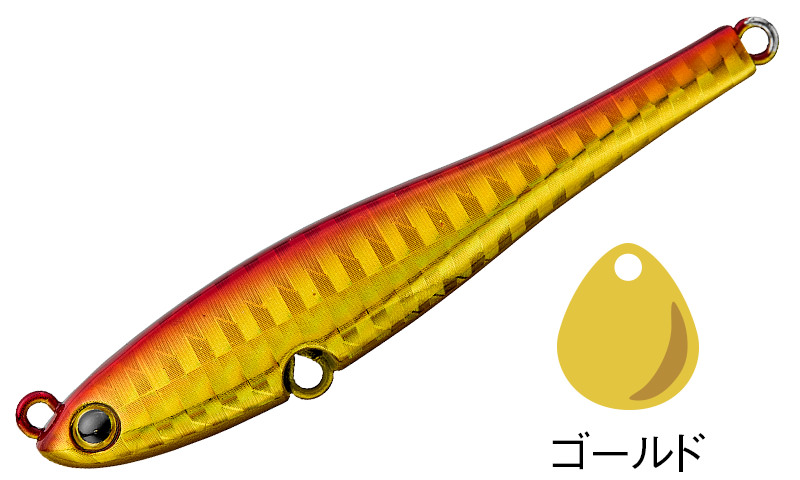
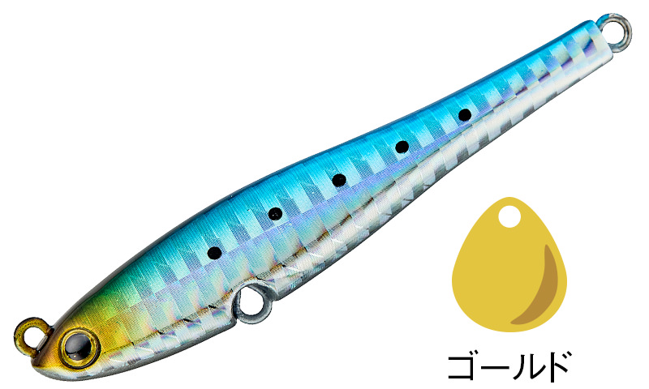
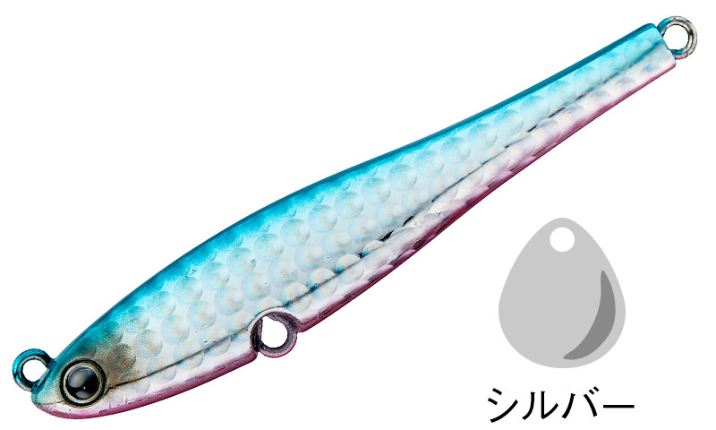
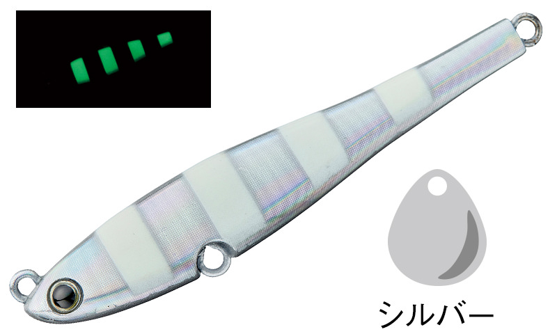

メタルマジックスリム
（MetalMagic Slim）
メタルマジックスリムはAqua Wave（アクアウェーブ／コーモラン）のスピンテールジグです。
低速から超高速まで幅広い巻き速度に対応する「メタルマジックシリーズ」に、スリムロングボディを採用した新モデル。マイクロベイトパターン用のルアーだけでは対応しきれない状況や、より強いアピールが求められる場面で真価を発揮します。

画像出典:Vivanet（アクアウェーブ）公式HP
スペック
- メーカー
- Aqua Wave（アクアウェーブ／コーモラン）
- タイプ
- スピンテールジグ
- ウエイト
- 30g／40g／50g／60g
- ターゲット
- サワラ・青物・シーバスなど
- 価格
- 950〜1,400円（税別）
▼今すぐチェック

メタルマジックスリムの特徴
スリムロングボディで、従来とは違うベイトサイズのパターンに対応
-
スリムロングボディの存在感
やや長めに設計されたスリムシルエットが、圧倒的な存在感を生みます。
-
安定したスイミング
優れたボディバランスで安定して泳ぎ、広い範囲のターゲットに効果的にアプローチできます。
-
超高速巻きでも回らない三角形ボディ
三角形の形状と超低重心設計で、超高速巻きでもボディが回転しにくい、シリーズ伝統の安定した姿勢を受け継いでいます。
-
専用設計のブレード
メタルマジック専用に設計されたブレードが、軽い引き抵抗とアピール力を両立しています。
メタルマジックスリムの使い方
基本は投げて底を取り、ただ巻きするだけ。テールのブレードが回転して、フラッシングと波動で誘います。
低速から超高速まで姿勢が崩れにくいので、速巻きでのリアクションから、ゆっくり見せる巻きまで、速度を変えて反応を探りましょう。
メタルマジックスリムの得意な状況
ベイトが少し大きめで、マイクロベイト用の小さなルアーではアピールが足りないとき。サワラ・青物のショアゲームで、より強いアピールで広く探りたい場面に向いています。
ワンポイント
マイクロベイトを偏食しているときは極小シルエットのメタルマジックTG、ベイトが大きめのときやアピールを上げたいときはスリム、と同じシリーズでベイトのサイズに合わせて使い分けましょう。
サワラ向けブレード系ジグの使い分け
| モデル | 全長／自重 | 得意な場面 |
|---|---|---|
| ブレードショーテル | 30〜130g（7サイズ） | ボートのブレードジギング専用。極太ボディで高速巻きでも回りにくい |
| ドラッグメタル キャスト SSブレード | 28・42・55・80g | スーパースリムボディで飛距離。投げて巻くだけのショアジギング向け |
| メタルマジックスリム | 30・40・50・60g | スリムロングボディのスピンテールジグ。やや大きめのベイトに（本記事のモデル） |
| メタルマジックTG | 20〜60g | タングステンの極小シルエット。マイクロベイトパターンに |
同じブレード系でも、ボートで縦に使うか、ショアから投げて巻くか、ベイトの大きさで選ぶルアーが変わります。釣り方とベイトに合わせて使い分けましょう。
人気カラー
全11色の中から4色を紹介します。

#A13A アカキン定番のアカキン。青物や濁りのある状況で目立たせたいときに。

#A14D イワシイワシを意識したナチュラルカラー。

#A106 ブルピンブルーピンクの定番アピールカラー。

#A75A ゼブラグローゼブラ柄のグローカラー。夜明け前や光量の少ない時間帯に。
画像出典:Vivanet（アクアウェーブ）公式HP
メタルマジックスリムに似ているルアー
-
 メタルマジックTG
AQUAWAVE
詳細はこちら＞
メタルマジックTG
AQUAWAVE
詳細はこちら＞
タングステンの極小シルエットのスピンテールジグ。マイクロベイトパターンに。
-
 ドラッグメタル キャスト SSブレード
DUO
詳細はこちら＞
ドラッグメタル キャスト SSブレード
DUO
詳細はこちら＞
スーパースリムボディのスイミングブレードジグ。ショアから投げて巻くだけで広く探れる。
-
 ブレードショーテル
SHOUT!
詳細はこちら＞
ブレードショーテル
SHOUT!
詳細はこちら＞
サワラがメインターゲットのブレードジギング専用テイルブレードジグ。ボートから狙うときに。